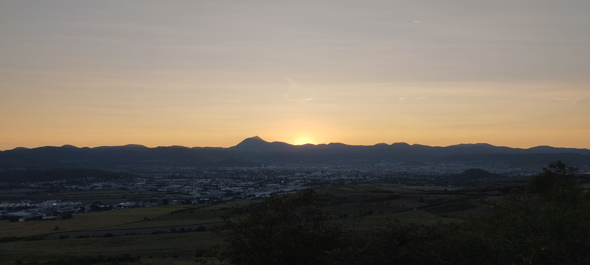
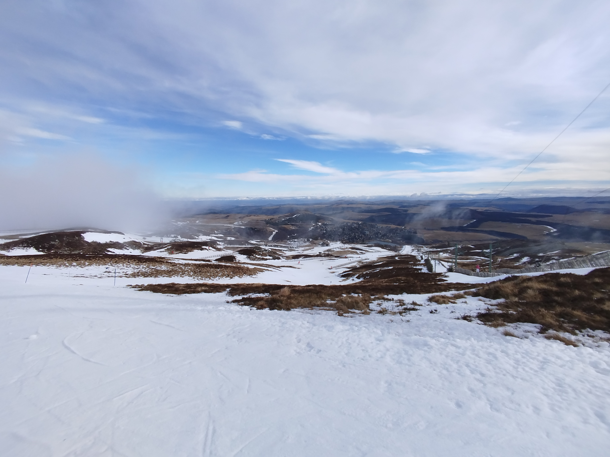

Cela me permet de me détacher et de reste en forme

Je fait régulièrement des sorties à vélo dans les montagne proche de clermont-ferrand. Ceci me permet de faire régulièrement des activites physique.
Lors de mon temps libre et après les cours je sors réguliérement faire du vélo, soit avec mes camarade ou seul. je pers souvant une ou deux heurs dans les collines proches d chez moi.

Cela me permet de me détacher et de reste en forme

Je fait aussi régulièrement lors de des sorties en snowboard dans les montagne proche de clermont-ferrand.